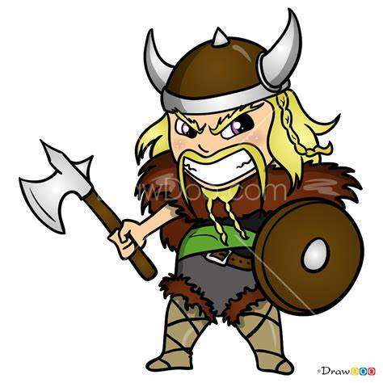
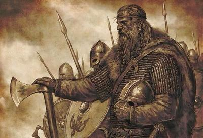

Les Vikings et leurs exploits
Les Vikings sont fascinants. Ils étaient de grands marins, commerçants, espions et bien sûr combattants! Ce site a été construit en hommage à ces hommes et femmes qui ont façonné l'Europe d'aujourd'hui.
Je suis membre de la SEV qui a pour but de de recréer des expéditions Vikings avec les matériaux d'époque, ainsi que du CRV.
Ne vous arretez pas là si ça vous intéresse !
Ceci : ressemble à un titre mais n'en est pas un.
Plusieurs textes islandais, dont la saga des Groenlandais et celle d'Erik le Rouge, racontent la découverte par des Vikings de terres situées au-delà du Groenland. Vers 986, un navigateur groenlandais Bjarni Herjolfsson, dérouté par une tempête, aperçoit des terres et des forêts inconnues. Une vingtaine d'années plus tard, Leif, fils d'Erik le Rouge, entreprend une expédition pour vérifier le récit de Bjarni. Après plusieurs jours de navigation, il découvre de nouveaux territoires : un pays de montagnes et de glaciers qu'il nomme Helluland (« pays des pierres plates »), puis une côte dominée par un arrière-pays forestier, qu'il appelle Markland (« pays des arbres »), enfin, une terre agréable où les explorateurs pêchent des saumons et cueillent des grappes de raisin, le Vinland (« pays de la vigne »).
Quelques photos de Vikings





Vikings célèbres :
- Bjorn Ironside
- Egil Skallagrmisson
- Eric Bloodaxe
- Erik le rouge
- Freydis Eirksdottir
- Ragnar Lodbrok

Si vous voulez me laisser un message